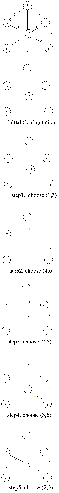

Kruskal's algorithm is a greedy algorithm in graph theory that finds a minimum spanning tree for a connected weighted graph.
It finds a subset of the edges that forms a tree that includes every vertex, where the total weight of all the edges in the tree is minimized.
This algorithm is directly based on the MST( minimum spanning tree) property.
The steps for implementing Kruskal's algorithm are as follows:
Consider the following example :
Start by taking a pair of nodes with smallest weight.
Then select another pair with small weight but it should not form a cycle.
Continue untill all nodes are covered.
